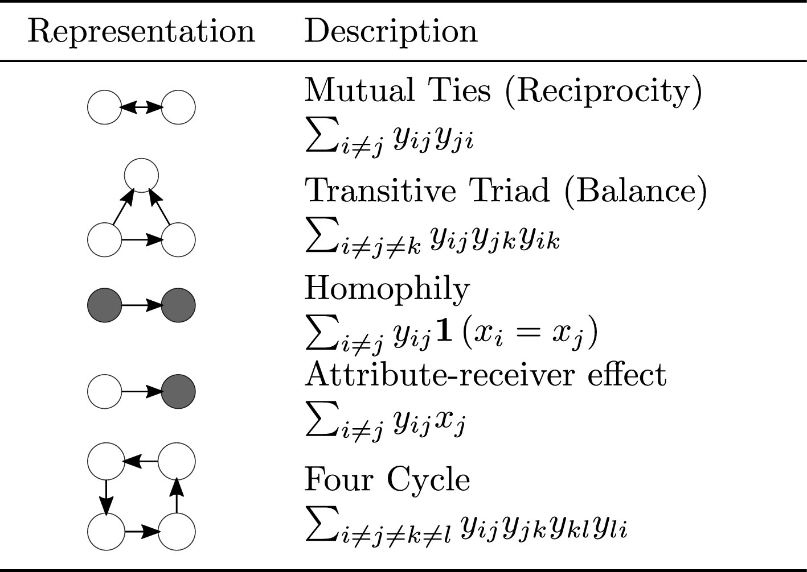
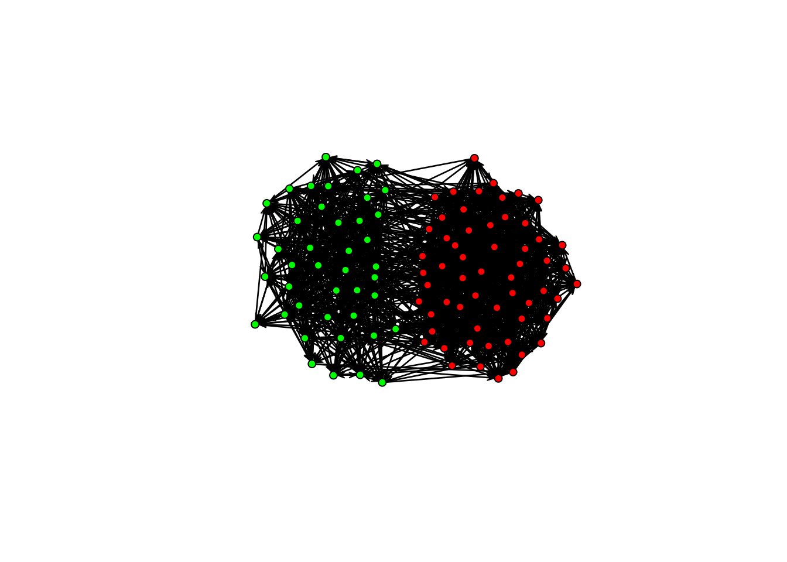
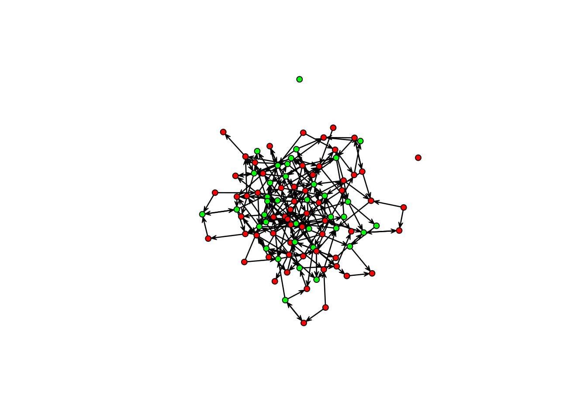

library(ergm)
## Simulating a Bernoulli network
Y <- matrix(rbinom(100^2, 1, 0.1), 100, 100)
diag(Y) <- NA
cbind(
logit = glm(as.vector(Y) ~ 1, family = binomial) |> coef(),
ergm = ergm(Y ~ edges) |> coef(),
avg = mean(Y, na.rm = TRUE) |> qlogis()
)
## logit ergm avg
## (Intercept) -2.170574 -2.170574 -2.1705746 Introduction to ERGMs
Have you ever wondered if the friend of your friend is your friend? Or if the people you consider to be your friends feel the same about you? Or if age is related to whether you seek advice from others? All these (and many others certainly more creative) questions can be answered using Exponential-Family Random Graph Models.
6.1 Introduction
Exponential-Family Random Graph Models, known as ERGMs, ERG Models, or p^* models (Holland and Leinhardt (1981), Frank and Strauss (1986), Wasserman and Pattison (1996), Snijders et al. (2006), Robins et al. (2007), and many others) are a large family of statistical distributions for random graphs. In ERGMs, the focus is on the processes that give origin to the network rather than the individual ties.1
The most common representation of ERGMs is the following:
P_{\mathcal{Y}, \bm{{\theta}}}(\bm{{Y}}=\bm{{y}}) = \exp\left(\bm{{\theta}}^{\mathbf{t}} s(y)\right)\kappa(\bm{{\theta}})^{-1}
where \bm{{Y}} is a random graph, \bm{{y}}\in \mathcal{Y} is a particular realization of Y, \bm{{\theta}} is a vector of parameters, s(\bm{{y}}) is a vector of sufficient statistics, and \kappa(\bm{{\theta}}) is a normalizing constant. The normalizing constant is defined as:
\kappa(\bm{{\theta}}) = \sum_{\bm{{y}} \in \mathcal{Y}} \exp\left(\bm{{\theta}}^{\mathbf{t}} s(\bm{{y}})\right)
From the statistical point of view, the normalizing constant makes this model attractive; only cases where \mathcal{Y} is small enough to be enumerated are feasible (Vega Yon, Slaughter, and Haye 2021). Because of that reason, estimating ERGMs is a challenging task.
In more simple terms, ERG models resemble Logistic regressions. The term \bm{{\theta}}^{\mathbf{t}} s(\bm{{y}}) is simply the sum of the product between the parameters and the statistics (like you would see in a Logistic regression,) and its key component is the composition of the vector of sufficient statistics, s(\bm{{y}}). The latter is what defines the model.
The vector of sufficient statistics dictates the data-generating process of the network. Like the mean and variance characterize the normal distribution, sufficient statistics (and corresponding parameters) characterize the ERG distribution. Figure 6.1 shows some examples of sufficient statistics with their corresponding parametrizations.

The ergm package has many terms we can use to fit these models. You can explore the available terms in the manual ergm.terms in the ergm package. Take a moment to explore the manual and see the different terms available.
6.2 Dyadic independence (p1)
The simplest ERG model we can fit is a Bernoulli (Erdos-Renyi) model. Here, the only statistic is the edgecount. Now, if we can write the function computing sufficient statistics as a sum over all edges, i.e., s(\bm{{y}}) = \sum_{ij}s'(y_{ij}), the model reduces to a Logistic regression.
When we see this, we say that dyads are independent of each other; this is also called p1 models (Holland and Leinhardt 1981). As a second example, imagine that we are interested in assessing whether gender homophily (the tendency between individuals of the same gender to connect) is present in a network. ERG models are the right tool for this task. Moreover, if we assume that gender homophily is the only mechanism that governs the network, the problem reduces to a Logistic regression:
P_{\mathcal{Y}, \bm{{\theta}}}(y_{ij} = 1) = \text{Logit}^{-1}\left(\theta_{edges} + \theta_{homophily}\mathbb{1}\left(X_i = X_j\right)\right)
where \mathbb{1}\left(\cdot\right) is the indicator function, and X_i equals one if the ith individual is female, and zero otherwise. To see this, let’s simulate some data. We will use the simulate_formula function in the ergm package. All we need is a network, a model, and some arbitrary coefficients. We start with an indicator vector for gender (1: female, male otherwise):
## Simulating data
set.seed(7731)
X <- rbinom(100, 1, 0.5)
head(X)[1] 0 1 0 0 1 0Next, we use the functions from the ergm and network packages to simulate a network with homophily:
## Simulating the network with homophily
library(ergm)
## A network with 100 vertices
Y <- network(100)
## Adding the vertex attribute with the %v% operator
Y %v% "X" <- X
## Simulating the network
Y <- ergm::simulate_formula(
# The model
Y ~ edges + nodematch("X"),
# The coefficients
coef = c(-3, 2)
)In this case, the network tends to be sparse (negative edges coefficient) and present homophilic ties (positive nodematch coefficient). Using the sna package (also from the statnet suite), we can plot the network:
library(sna)
gplot(Y, vertex.col = c("green", "red")[Y %v% "X" + 1])
Using the ERGM package, we can fit the model using code very similar to the one used to simulate the network:
fit_homophily <- ergm(Y ~ edges + nodematch("X"))We will check the results later and compare them against the following: the Logit model. The following code chunk implements the logistic regression model for this particular model. This example only proves that ERGMs are a generalization of Logistic regression.
Code
n <- 100
sstats <- summary_formula(Y ~ edges + nodematch("X"))
Y_mat <- as.matrix(Y)
diag(Y_mat) <- NA
## To speedup computations, we pre-compute this value
X_vec <- outer(X, X, "==") |> as.numeric()
## Function to compute the negative loglikelihood
obj <- \(theta) {
# Compute the probability according to the value of Y
p <- ifelse(
Y_mat == 1,
# If Y = 1
plogis(theta[1] + X_vec * theta[2]),
# If Y = 0
1 - plogis(theta[1] + X_vec * theta[2])
)
# The -loglikelihood
-sum(log(p[!is.na(p)]))
}And, using the optim function, we can fit the model:
## Fitting the model
fit_homophily_logit <- optim(c(0,0), obj, hessian = TRUE)Now that we have the values let’s compare them:
## The coefficients
cbind(
theta_ergm = coef(fit_homophily),
theta_logit = fit_homophily_logit$par,
sd_ergm = vcov(fit_homophily) |> diag() |> sqrt(),
sd_logit = sqrt(diag(solve(fit_homophily_logit$hessian)))
) theta_ergm theta_logit sd_ergm sd_logit
edges -2.973331 -2.973829 0.06659648 0.06661194
nodematch.X 1.926039 1.926380 0.07395580 0.07397025As you can see, both models yielded the same estimates because they are the same! Before continuing, let’s review a couple of important results in ERGMs.
6.3 The most important results
If we were able to say what two of the most important results in ERGMs are, I would say the following: (a) conditioning on the rest of the graph, the probability of a tie distributes Logistic (Bernoulli), and (b) the ratio between two loglikelihoods can be approximated through simulation.
6.4 The logistic distribution
Let’s start by stating the result: Conditioning on all graphs that are not y_{ij}, the probability of a tie Y_{ij} is distributed Logistic; formally:
P_{\mathcal{Y}, \bm{{\theta}}}(Y_{ij}=1 | \bm{{y}}_{-ij}) = \frac{1}{1 + \exp \left(\bm{{\theta}}^{\mathbf{t}}\delta_{ij}(\bm{{y}}){}\right)},
where \delta_{ij}(\bm{{y}}){}\equiv s_{ij}^+(\bm{{y}}) - s_{ij}^-(\bm{{y}}) is the change statistic, and s_{ij}^+(\bm{{y}}) and s_{ij}^-(\bm{{y}}) are the statistics of the graph with and without the tie Y_{ij}, respectively.
The importance of this result is two-fold: (a) we can use this equation to interpret fitted models in the context of a single graph (like using odds,) and (b) we can use this equation to simulate from the model, without touching the normalizing constant.
6.5 The ratio of loglikelihoods
The second significant result is that the ratio of loglikelihoods can be approximated through simulation. It is based on the following observation by Geyer and Thompson (1992):
\frac{\kappa(\bm{{\theta}})}{\kappa(\bm{{\theta}}_0)} = \mathbb{E}_{\mathcal{Y}, \bm{{\theta}}_0}\left((\bm{{\theta}} - \bm{{\theta}}_0)s(\bm{{y}})^{\mathbf{t}}\right),
Using the latter, we can approximate the following loglikelihood ratio:
\begin{align*} l(\bm{{\theta}}) - l(\bm{{\theta}}_0) = & (\bm{{\theta}} - \bm{{\theta}}_0)^{\mathbf{t}}s(\bm{{y}}) - \log\left[\frac{\kappa(\bm{{\theta}})}{\kappa(\bm{{\theta}}_0)}\right]\\ \approx & (\bm{{\theta}} - \bm{{\theta}}_0)^{\mathbf{t}}s(\bm{{y}}) - \log\left[M^{-1}\sum_{\bm{{y}}^{(m)}} (\bm{{\theta}} - \bm{{\theta}}_0)^{\mathbf{t}}s(\bm{{y}}^{(m)})\right] \end{align*}
Where \bm{{\theta}}_0 is an arbitrary vector of parameters, and \bm{{y}}^{(m)} are sampled from the distribution P_{\mathcal{Y}, \bm{{\theta}}_0}. In the words of Geyer and Thompson (1992), “[…] it is possible to approximate \bm{{\theta}} by using simulations from one distribution P_{\mathcal{Y}, \bm{{\theta}}_0} no matter which \bm{{\theta}}_0 in the parameter space is.”
6.6 Start to finish example
There is no silver bullet to fit ERGMs. However, the following steps are a good starting point:
Inspect the data: Ensure the network you work with is processed correctly. Some common mistakes include isolates being excluded, vertex attributes not being adequately aligned (mismatch), etc.
Start with endogenous effects first: Before jumping into vertex/edge-covariates, try fitting models that only include structural terms such as edgecount, triangles (or their equivalent,) stars, reciprocity, etc.
After structure is controlled: You can add vertex/edge-covariates. The most common ones are homophily, nodal-activity, etc.
Evaluate your results: Once you have a model you are happy with, the last couple of steps are (a) assess convergence (which is usually done automagically by the
ergmpackage,) and (b) assess goodness-of-fit, which in this context means how good was our model to capture (not-controlled for) properties of the network.
Although we could go ahead and use an existing dataset to play with, instead, we will simulate a directed graph with the following properties:
- 100 nodes.
- Homophily on Music taste.
- Gender heterophily.
- Reciprocity
The following code chunk illustrates how to do this in R. Notice that, like the previous example, we need to create a network with the vertex attributes needed to simulate homophily.
## Simulating the covariates (vertex attribute)
set.seed(1235)
## Simulating the data
Y <- network(100, directed = TRUE)
Y %v% "fav_music" <- sample(c("rock", "jazz", "pop"), 100, replace = TRUE)
Y %v% "female" <- rbinom(100, 1, 0.5) Now that we have a starting point for the simulation, we can use the simulate_formula function to get our network:
Y <- ergm::simulate_formula(
Y ~
edges +
nodematch("fav_music") +
nodematch("female") +
mutual,
coef = c(-4, 1, -1, 2)
)
## And visualize it!
gplot(Y, vertex.col = c("green", "red")[Y %v% "female" + 1])
This figure is precisely why we need ERGMs (and why many Sunbelt talks don’t include a network visualization!). We know the graph has structure (it’s not random), but visually, it is hard to see.
6.7 Inspect the data
For the sake of time, we will not take the time to investigate our network properly. However, you should always do so. Make sure you do descriptive statistics (density, centrality, modularity, etc.), check missing values, isolates (disconnected nodes), and inspect your data visually through “notepad” and visualizations before jumping into your ERG model.
6.8 Start with endogenous effects first
The step is to check whether we can fit an ERGM or not. We can do so with the Bernoulli graph:
model_1 <- ergm(Y ~ edges)
summary(model_1)Call:
ergm(formula = Y ~ edges)
Maximum Likelihood Results:
Estimate Std. Error MCMC % z value Pr(>|z|)
edges -3.78885 0.06833 0 -55.45 <1e-04 ***
---
Signif. codes: 0 '***' 0.001 '**' 0.01 '*' 0.05 '.' 0.1 ' ' 1
Null Deviance: 13724 on 9900 degrees of freedom
Residual Deviance: 2102 on 9899 degrees of freedom
AIC: 2104 BIC: 2112 (Smaller is better. MC Std. Err. = 0)It is rare to see a model in which the edgecount is not significant. The next term we will add is reciprocity (mutual in the ergm package)
model_2 <- ergm(Y ~ edges + mutual)
summary(model_2)
## Call:
## ergm(formula = Y ~ edges + mutual)
##
## Monte Carlo Maximum Likelihood Results:
##
## Estimate Std. Error MCMC % z value Pr(>|z|)
## edges -3.93277 0.07833 0 -50.205 <1e-04 ***
## mutual 2.15152 0.31514 0 6.827 <1e-04 ***
## ---
## Signif. codes: 0 '***' 0.001 '**' 0.01 '*' 0.05 '.' 0.1 ' ' 1
##
## Null Deviance: 13724 on 9900 degrees of freedom
## Residual Deviance: 2064 on 9898 degrees of freedom
##
## AIC: 2068 BIC: 2083 (Smaller is better. MC Std. Err. = 0.8083)As expected, reciprocity is significant (we made it like this!.) Notwithstanding, there is a difference between this model and the previous one. This model was not fitted using MLE. Instead, since the reciprocity term involves more than one tie, the model cannot be reduced to a Logistic regression, so it needs to be estimated using one of the other available estimation methods in the ergm package.
The model starts gaining complexity as we add higher-order terms involving more ties. An infamous example is the number of triangles. Although highly important for social sciences, including triangle terms in your ERGMs results in a degenerate model (when the MCMC chain jumps between empty and fully connected graphs). One exception is if you deal with small networks. To address this, Snijders et al. (2006) and Hunter (2007) introduced various new terms that significantly reduce the risk of degeneracy. Here, we will illustrate the use of the term “geometrically weighted dyadic shared partner” (gwdsp,) which Prof. David Hunter proposed. The gwdsp term is akin to triadic closure but reduces the chances of degeneracy.
## Fitting two more models (output message suppressed)
model_3 <- ergm(Y ~ edges + mutual + gwdsp(.5, fixed = TRUE))
## model_4 <- ergm(Y ~ edges + triangles) # bad ideaRight after fitting a model, we want to inspect the results. An excellent tool for this is the R package texreg (Leifeld 2013):
library(texreg)
screenreg(list(model_1, model_2, model_3))
=============================================================
Model 1 Model 2 Model 3
-------------------------------------------------------------
edges -3.79 *** -3.93 *** -3.84 ***
(0.07) (0.08) (0.21)
mutual 2.15 *** 2.14 ***
(0.32) (0.29)
gwdsp.OTP.fixed.0.5 -0.02
(0.05)
-------------------------------------------------------------
AIC 2104.43 2068.22 2071.94
BIC 2111.63 2082.62 2093.54
Log Likelihood -1051.22 -1032.11 -1032.97
=============================================================
*** p < 0.001; ** p < 0.01; * p < 0.05So far, model_2 is winning. We will continue with this model.
6.9 Let’s add a little bit of structure
Now that we only have a model featuring endogenous terms, we can add vertex/edge-covariates. Starting with "fav_music", there are a couple of different ways to use this node feature:
Directly through homophily (assortative mixing): Using the
nodematchterm, we can control for the propensity of individuals to connect based on shared music taste.Homophily (v2): We could activate the option
diff = TRUEusing the same term. By doing this, the homophily term is operationalized differently, adding as many terms as options in the vertex attribute.Mixing: We can use the term
nodemixfor individuals’ tendency to mix between musical tastes.
model_4 <- ergm(Y ~ edges + mutual + nodematch("fav_music"))
model_5 <- ergm(Y ~ edges + mutual + nodematch("fav_music", diff = TRUE))
model_6 <- ergm(Y ~ edges + mutual + nodemix("fav_music"))Now, let’s inspect what we have so far:
screenreg(list(`2` = model_2, `4` = model_4, `5` = model_5, `6` = model_6))
================================================================================
2 4 5 6
--------------------------------------------------------------------------------
edges -3.93 *** -4.29 *** -4.29 *** -3.56 ***
(0.08) (0.11) (0.11) (0.24)
mutual 2.15 *** 1.99 *** 2.00 *** 2.02 ***
(0.32) (0.30) (0.30) (0.30)
nodematch.fav_music 0.85 ***
(0.14)
nodematch.fav_music.jazz 0.74 **
(0.25)
nodematch.fav_music.pop 0.82 ***
(0.18)
nodematch.fav_music.rock 0.87 ***
(0.17)
mix.fav_music.pop.jazz -0.54
(0.34)
mix.fav_music.rock.jazz -0.75 *
(0.38)
mix.fav_music.jazz.pop -0.60
(0.35)
mix.fav_music.pop.pop 0.10
(0.27)
mix.fav_music.rock.pop -0.50
(0.31)
mix.fav_music.jazz.rock -1.40 **
(0.44)
mix.fav_music.pop.rock -0.86 *
(0.33)
mix.fav_music.rock.rock 0.15
(0.27)
--------------------------------------------------------------------------------
AIC 2068.22 2030.85 2033.57 2036.37
BIC 2082.62 2052.45 2069.57 2108.38
Log Likelihood -1032.11 -1012.42 -1011.79 -1008.19
================================================================================
*** p < 0.001; ** p < 0.01; * p < 0.05Although model 5 has a higher loglikelihood, using AIC or BIC suggests model 4 is a better candidate. For the sake of time, we will jump ahead and add nodematch("female") as the last term of our model. The next step is to assess (a) convergence and (b) goodness-of-fit.
model_final <- ergm(Y ~ edges + mutual + nodematch("fav_music") + nodematch("female"))
## Printing the pretty table
screenreg(list(`2` = model_2, `4` = model_4, `Final` = model_final))
============================================================
2 4 Final
------------------------------------------------------------
edges -3.93 *** -4.29 *** -3.95 ***
(0.08) (0.11) (0.12)
mutual 2.15 *** 1.99 *** 1.86 ***
(0.32) (0.30) (0.33)
nodematch.fav_music 0.85 *** 0.81 ***
(0.14) (0.14)
nodematch.female -0.74 ***
(0.15)
------------------------------------------------------------
AIC 2068.22 2030.85 2002.18
BIC 2082.62 2052.45 2030.98
Log Likelihood -1032.11 -1012.42 -997.09
============================================================
*** p < 0.001; ** p < 0.01; * p < 0.056.10 More about ERGMs
We have shown here just a glimpse of what ERG models are. A large, active, collaborative community of social network scientists is working on new extensions and advances. If you want to learn more about ERGMs, I recommend the following resources:
While ERG Models can be used to predict individual ties (which is another way of describing them), the focus is on the processes that give origin to the network.↩︎